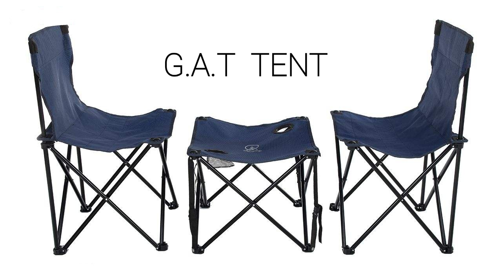

میز و صندلی مسافرتی (کمپینگ و پیکنیک) یکی از پرطرفدارترین محصولات صنعت مبلمان فضای باز است. با رشد گردشگری، کمپینگ و سبک زندگی outdoor، تقاضا برای این محصولات سبک، تاشو و مقاوم هر سال افزایش مییابد. در این مقاله جامع، تمام مراحل تولید، کنترل کیفیت، بستهبندی و کانالهای توزیع این محصولات را بررسی میکنیم.

استفاده از میز و صندلی تاشو در طبیعت و کمپینگ
میز و صندلی مسافرتی چیست؟
میز و صندلی مسافرتی به محصولاتی گفته میشود که برای حمل آسان، وزن کم و قابلیت جمعشدن طراحی شدهاند. این محصولات معمولاً از آلومینیوم، فولاد سبک، پلاستیک تقویتشده یا ترکیبی از چوب و فلز ساخته میشوند و در کمپینگ، پیکنیک، ساحل، حیاط خانه، نمایشگاهها و حتی رویدادهای موقت کاربرد دارند.
- وزن سبک (معمولاً زیر ۴ کیلوگرم برای صندلی و ۸ کیلوگرم برای میز)
- قابلیت جمع شدن سریع و حجم کم در حالت بستهشده
- مقاومت در برابر رطوبت، اشعه UV و زنگزدگی
- ظرفیت تحمل وزن مناسب (حداقل ۱۰۰–۱۵۰ کیلوگرم برای صندلی)
- طراحی ارگونومیک و راحتی نسبی
انواع اصلی میز و صندلی مسافرتی
صندلی تاشو کلاسیک
فریم آلومینیومی یا فولادی با نشیمن پارچهای آکسفورد یا مش. محبوبترین مدل برای کمپینگ.
صندلی کرمیت (Kermit)
طراحی خاص با نشیمن چوبی یا پارچهای و فریم سبک. ظاهر لوکستر و مناسب کمپینگ مدرن.
میز رولآپ (تختهای)
صفحه میز از تختههای آلومینیومی یا بامبو که مثل رول جمع میشود. فوقالعاده سبک و جمعوجور.
ست کامل چمدانی
میز + ۴ صندلی که داخل هم جمع شده و مثل چمدان حمل میشود. ایدهآل برای خانواده.
میز تاشو آلومینیومی
صفحه ثابت یا تاشو با پایههای تلسکوپی. مناسب پختوپز و غذاخوری در طبیعت.
صندلی فوقسبک کولهای
وزن زیر ۱ کیلوگرم، مناسب کولهگردها و پیادهرویهای طولانی.

ست میز و صندلی مسافرتی در محیط کمپینگ
مراحل تولید میز و صندلی مسافرتی
تولید این محصولات ترکیبی از فرآیندهای فلزکاری، دوخت پارچه و مونتاژ است. مراحل اصلی عبارتند از:
طراحی سهبعدی، انتخاب مواد، ساخت نمونه اولیه و تست استحکام، تاشو و راحتی.
لوله آلومینیومی (معمولاً آلیاژ ۶۰۶۱ یا ۷۰۷۵)، پارچه آکسفورد ۶۰۰D یا مش، فوم نشیمن، پیچ و اتصالات ضدزنگ.
برش لولهها با دستگاه CNC، خمکاری، سوراخکاری و جوش نقطهای یا پرچ.
رنگ پودری الکترواستاتیک یا آنودایز آلومینیوم برای مقاومت در برابر خوردگی و زیبایی.
برش پارچه، دوخت، نصب فوم و زیپ یا کش. در مدلهای چوبی، برش و پرداخت چوب ترموود یا بامبو.
اتصال نشیمن به فریم، نصب پایهها، تست تاشو و باز شدن، کنترل کیفیت نهایی.
قرار دادن در کیف حمل یا کارتن، افزودن دفترچه راهنما و لیبل.
مواد اولیه پرکاربرد
| ماده | کاربرد | مزایا | نکات مهم |
|---|---|---|---|
| آلومینیوم ۶۰۶۱ / ۷۰۷۵ | فریم میز و صندلی | سبک، مقاوم، ضدزنگ | آلیاژ ۷۰۷۵ محکمتر اما گرانتر |
| فولاد کربنی با پوشش | فریم اقتصادی | مقرونبهصرفه، استحکام بالا | نیاز به پوشش ضدزنگ خوب |
| پارچه آکسفورد ۶۰۰D | نشیمن صندلی | مقاوم در برابر سایش و آب | باید ضدUV باشد |
| مش تنفسی | پشت و نشیمن | تهویه عالی، سبک | مناسب مناطق گرم |
| بامبو یا ترموود | صفحه میز رولآپ | ظاهر طبیعی و لوکس | نیاز به پوشش ضدآب |
کنترل کیفیت و استانداردها
محصولات باکیفیت باید تستهای زیر را پشت سر بگذارند:
- تست تحمل وزن استاتیک و دینامیک
- تست تعداد دفعات باز و بسته شدن (حداقل ۵۰۰۰ سیکل)
- تست مقاومت در برابر رطوبت و اسپری نمک (برای صادرات)
- تست ثبات رنگ در برابر نور خورشید
- بررسی لبههای تیز و ایمنی کلی
کانالهای توزیع میز و صندلی مسافرتی
۱. فروش عمده (B2B)
فروش به فروشگاههای زنجیرهای لوازم ورزشی، هایپرمارکتها، شرکتهای تجهیزات کمپینگ و فروشگاههای آنلاین بزرگ. معمولاً با حداقل سفارش (MOQ) و قیمت رقابتی انجام میشود.
۲. فروش آنلاین مستقیم (D2C)
از طریق فروشگاه اینترنتی خودتان، دیجیکالا، آمازون، علیبابا و اینستاگرام. حاشیه سود بالاتر اما نیاز به بازاریابی قوی دارد.
۳. صادرات
بازارهای اصلی: اروپا، آمریکا، استرالیا، کشورهای حوزه خلیج فارس و آسیای میانه. محصولاتی که سبک، جمعوجور و با بستهبندی حرفهای باشند شانس بیشتری دارند.
۴. فروش سازمانی و رویدادی
تأمین برای هتلها، کمپهای گردشگری، شرکتهای برگزارکننده ایونت و سازمانهای دولتی.

استفاده از مبلمان تاشو در فضاهای outdoor و رویدادها
چالشهای تولید و توزیع و راهحلها
- رقابت قیمتی شدید: تمرکز روی کیفیت، طراحی متمایز و برندسازی
- نوسان قیمت مواد اولیه: قراردادهای بلندمدت با تأمینکنندگان آلومینیوم
- حملونقل و حجم: طراحی محصولات فوقفشرده برای کاهش هزینه ارسال
- فصلی بودن تقاضا: تولید مدلهای چهارفصل و ورود به بازارهای نیمکرهجنوبی
- شکایات گارانتی: کنترل کیفیت سختگیرانه و خدمات پس از فروش قوی
روندهای روز بازار (۲۰۲۵–۲۰۲۶)
- افزایش تقاضا برای محصولات فوقسبک و کولهای
- استفاده از مواد بازیافتی و دوستدار محیط زیست
- طراحیهای مینیمال و رنگهای خنثی (بژ، سبز زیتونی، خاکستری)
- ستهای کامل با کیف حمل یکپارچه
- ادغام قابلیتهایی مثل جیب جانبی، جا لیوانی و پورت USB
نکات طلایی برای موفقیت در این صنعت
- روی کیفیت اتصالات و لولاها سرمایهگذاری کنید؛ این بخش بیشترین شکایت را دارد.
- بستهبندی را حرفهای و جذاب طراحی کنید؛ اولین برخورد مشتری با محصول است.
- نمونه رایگان یا با تخفیف بالا برای خریداران عمده ارسال کنید.
- حضور در نمایشگاههای بینالمللی outdoor و ورزشی را جدی بگیرید.
- از بازخورد مشتریان برای بهبود مدلهای بعدی استفاده کنید.
جمعبندی
صنعت تولید و توزیع میز و صندلی مسافرتی فرصتی جذاب و رو به رشد است، بهشرطی که کیفیت، طراحی کاربردی و شبکه توزیع قوی داشته باشید. با تمرکز روی مواد اولیه مرغوب، کنترل کیفیت دقیق و شناخت درست کانالهای فروش، میتوانید سهم قابل توجهی از بازار داخلی و صادراتی را به دست آورید.
اگر در حال راهاندازی خط تولید یا توسعه شبکه توزیع هستید، پیشنهاد میکنیم ابتدا با ساخت چند مدل محدود و تست بازار شروع کنید و سپس مقیاس را افزایش دهید.